Lays out a concrete method (CLI over MCP, drive the browser via Chrome DevTools Protocol, escalate through a three-rung ladder of click fidelity) for getting agents past anti-bot defenses including Cloudflare Turnstile, MTCaptcha, and re...
Diagram reconstructs the sense-act-verify loop and three-rung click ladder from the talk's own descriptions of the Turnstile, MTCaptcha, and reCAPTCHA v2 solves (ours).
“A CDP browser is just like a meat bag with a mouse”
said at 01:35“your agent's clicks and keystrokes travel the exact same path inside Chrome that yours do”
said at 02:06“both a CLI and an MCP given the same task achieve those tasks successfully”
said at 02:37“MCP took 71 round trips and 8 minutes for the same task that took a CLI only seven turns and in under 1 minute”
said at 03:38“Chrome stamps every single event with just that answer, whether it's trusted or untrusted”
said at 11:26“these cheeky guys have hidden this thing through three isolated boundaries”
said at 12:59“your agent's actually going to read this guy. And so, what the agent does is simulate what you would do”
said at 14:26“An agent that round-trips a model on every click and on every look burns that clock and loses”
said at 18:44Gallon frames this as a repeatable, general method rather than a one-off CAPTCHA trick, but the live demos are against Rexmore's own infrastructure/accounts per his stated legal caveat, so the reliability figures (e.g., 'repeatable reliable solution') are self-reported rather than independently benchmarked (ours).
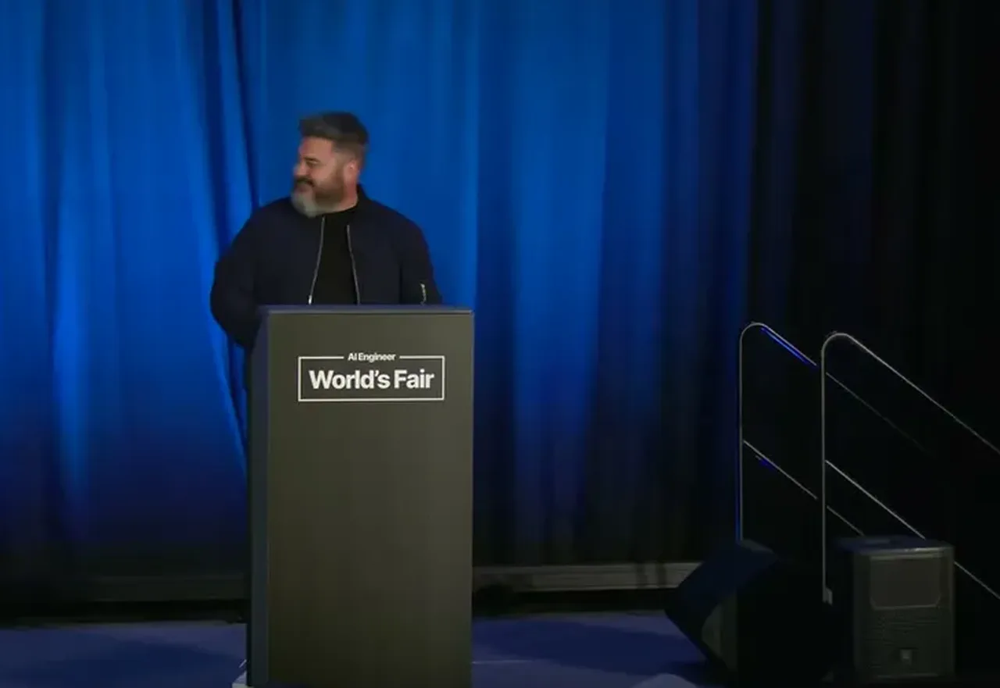
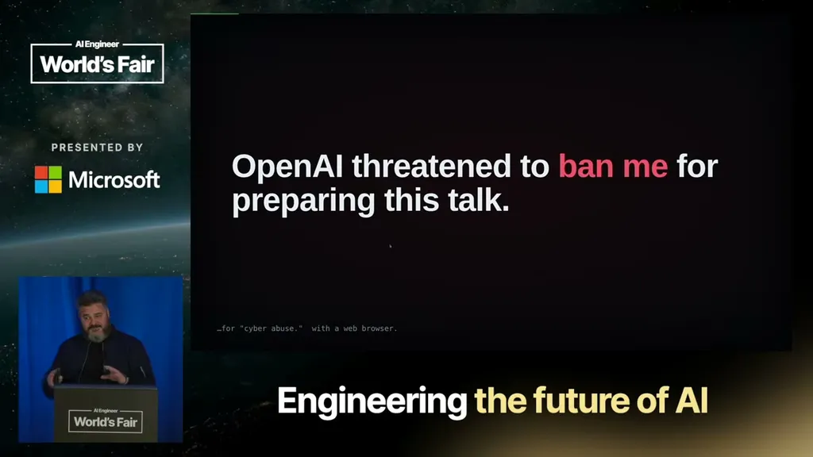
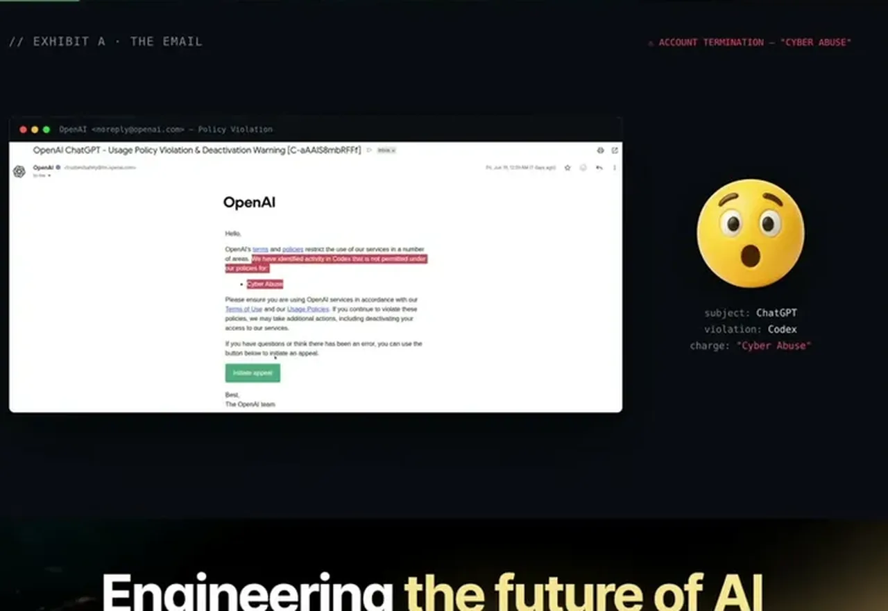
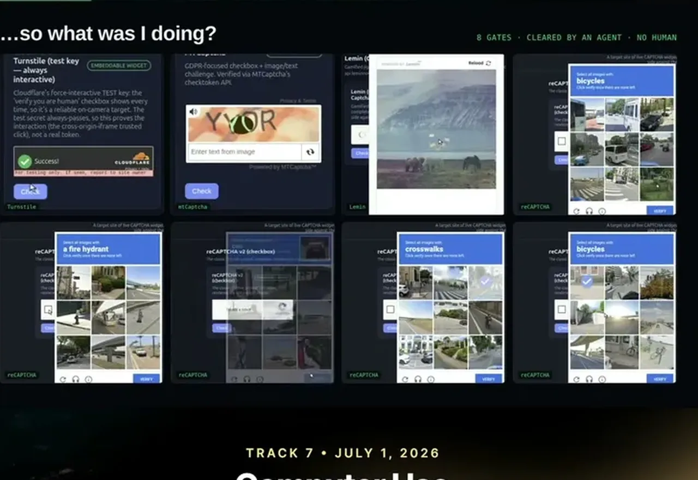
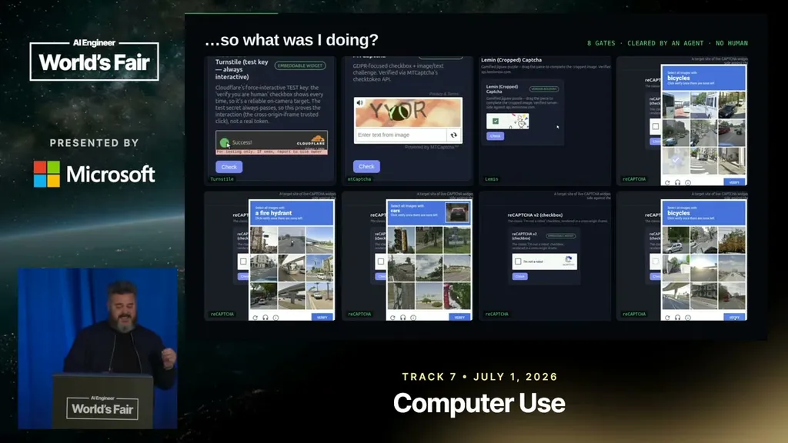
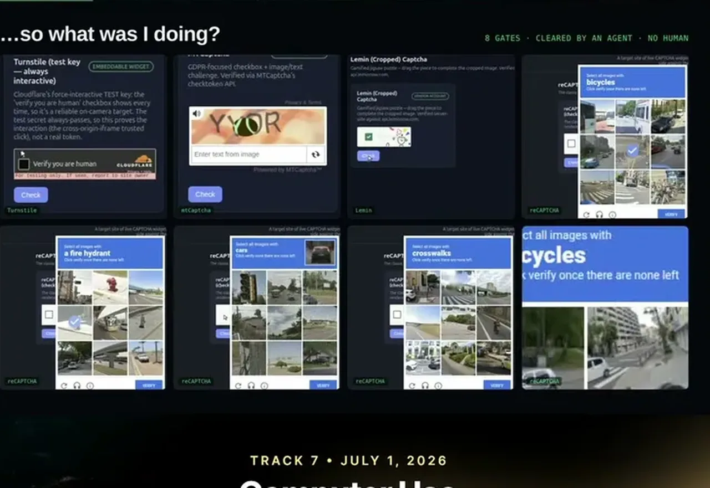
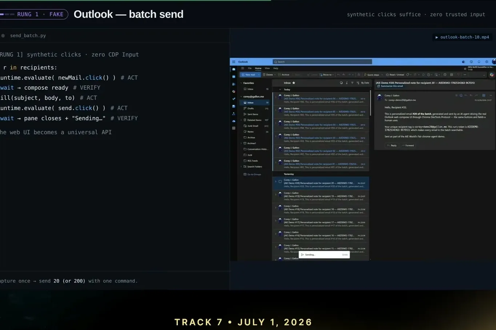
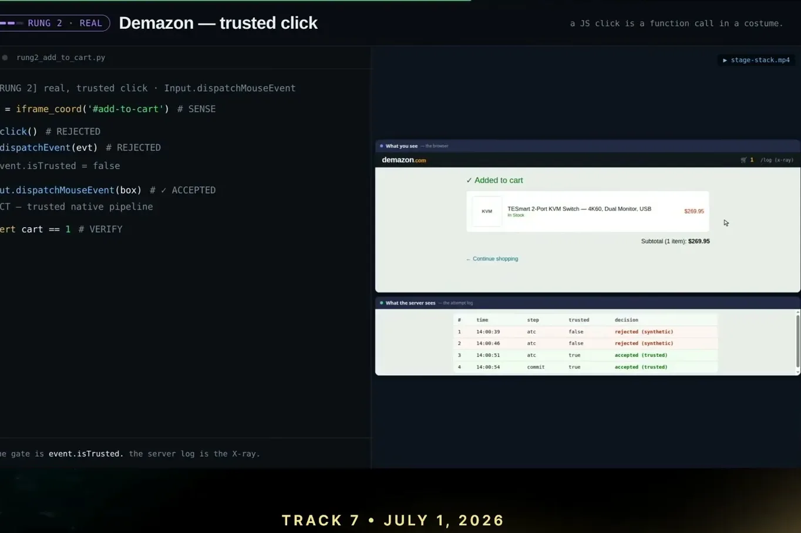
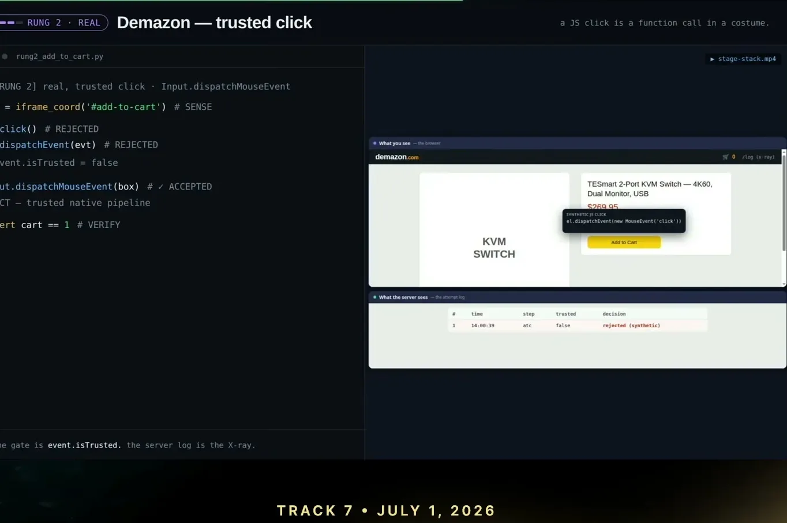
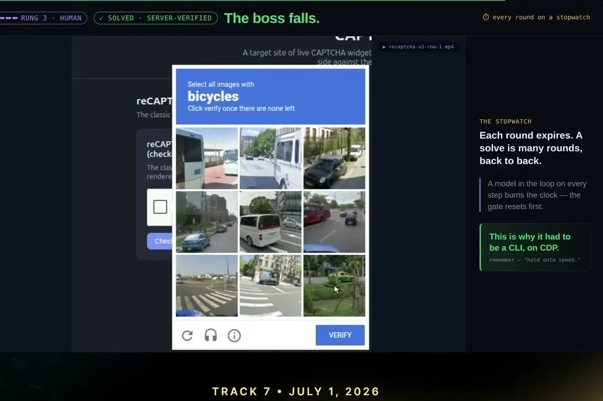
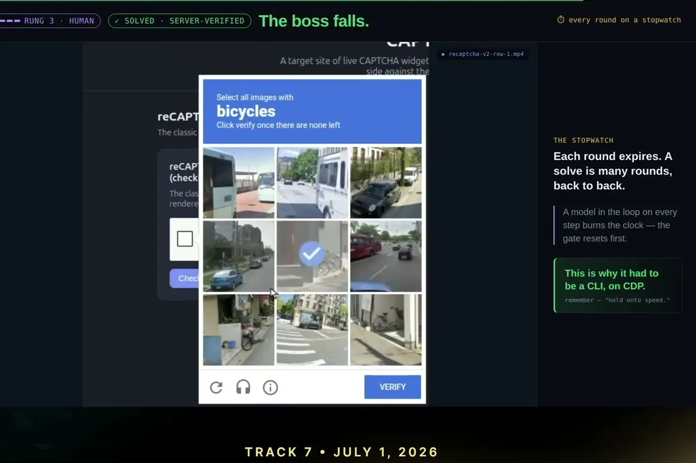
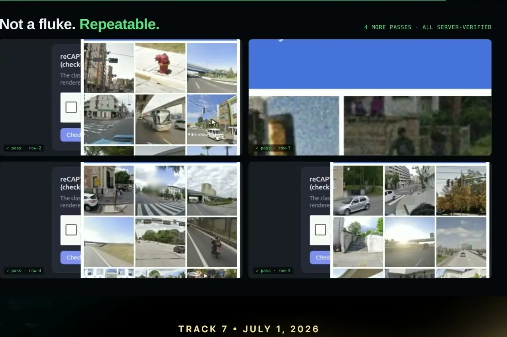
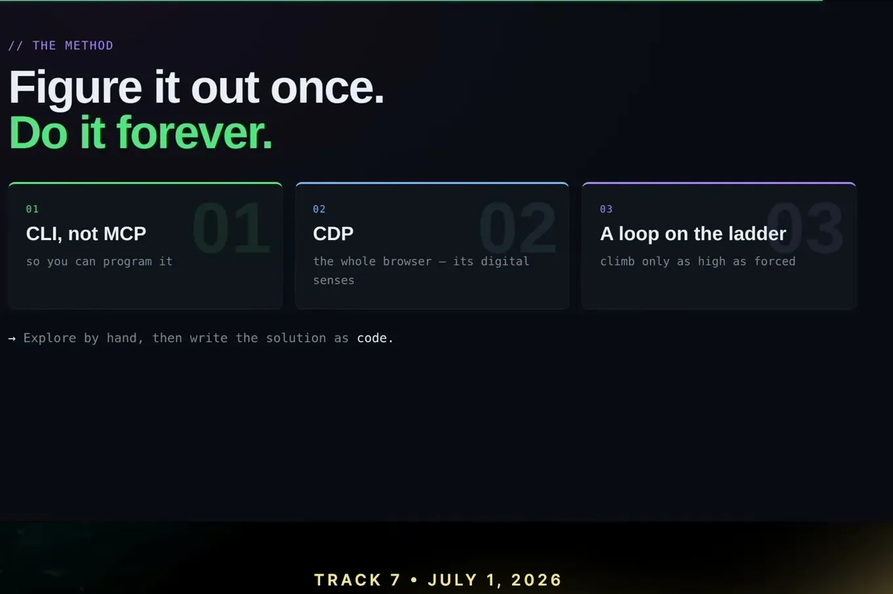
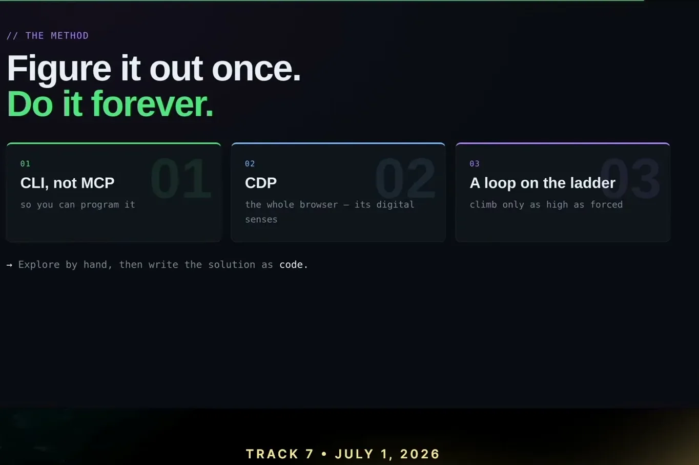
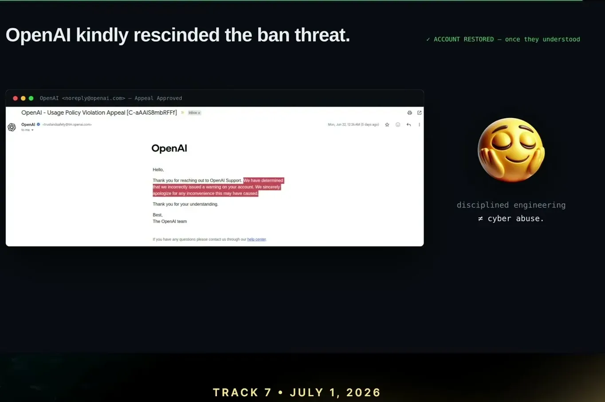
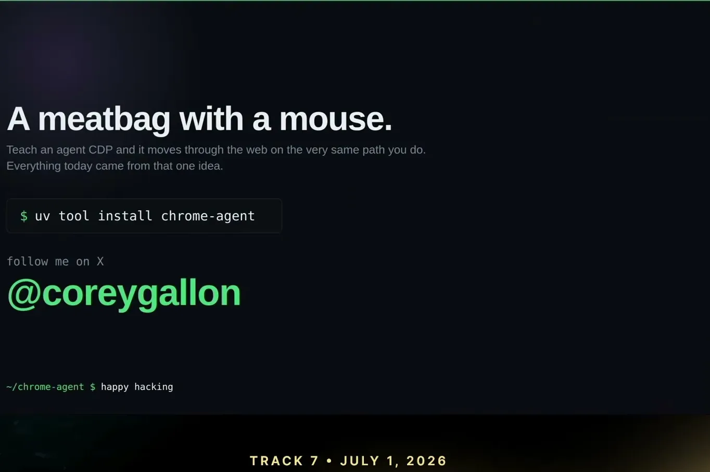
| Stance | Claim | t |
|---|---|---|
| asserts | The talk's central claim is that a CDP-driven browser behaves like a human with a mouse as far as anti-bot systems can tell. | 01:35 |
| asserts | An agent's clicks and keystrokes sent via CDP travel the exact same path inside Chrome that a human's do. | 02:06 |
| asserts | A study found CLI and MCP tools achieve the same task successfully at roughly the same rate, about 83% of the time. | 02:37 |
| asserts | The same task took MCP 71 round trips and 8 minutes versus 7 turns and under 1 minute for a CLI, and Anthropic reported CLI can be up to 75x cheaper in token cost. | 03:38 |
| asserts | Cloudflare Turnstile hides its checkbox behind three isolated boundaries: a closed shadow root inside a cross-origin iframe that itself has another shadow root. | 12:59 |
| asserts | Chrome stamps every input event as trusted or untrusted, and pages can use this to silently drop synthetic (untrusted) clicks. | 11:26 |
| asserts | For MTCaptcha, the agent uses its own vision capability to read distorted text from a screenshot and types the answer back via real trusted keystrokes. | 14:26 |
| warns | reCAPTCHA v2 challenges expire on a timer, so an agent that round-trips a model on every click and every look burns the clock and fails to finish in time. | 18:44 |
| recommends | The recommended method is to give the agent a scriptable CLI, drive the browser through CDP, run a sense-act-verify loop climbing the ladder only as forced, then write the solved path down as reusable code. | 19:46 |
Machine-readable copy embedded in this page (script#ontology) and in the corpus ontology.